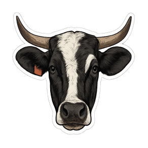
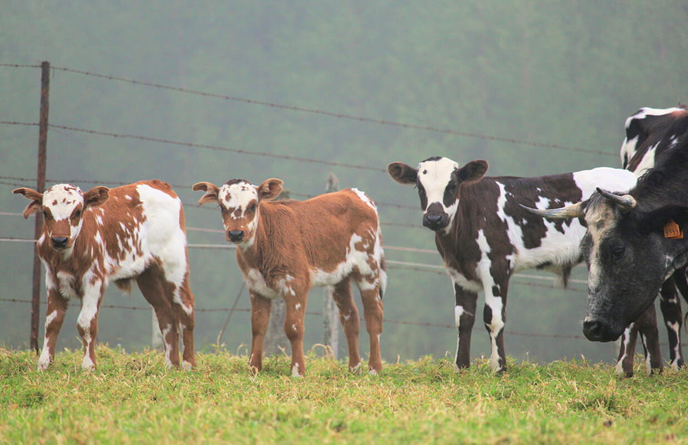
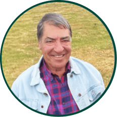

RAÇA BOVINA
Catrina
Raça bovina autóctone portuguesa
A Catrina tem as suas raízes na Ilha Terceira, estando intimamente ligada ao património genético, cultural e paisagístico dos Açores. Está particularmente bem adaptada a zonas de média e alta altitude.
Origem
A história da Catrina está ligada ao mundo rural terceirense desde os primeiros tempos do povoamento. Estima-se que raças portuguesas introduzidas nos Açores por volta de 1427 tenham estado na base genética das populações bovinas açorianas. A Catrina diferenciou-se das restantes populações, em particular do gado bravo, mantendo características próprias associadas ao regime de criação e ao contexto rural da Terceira.

Utilização tradicional
Historicamente, a Catrina foi reconhecida pela sua aptidão múltipla, sendo utilizada em:
• Produção de leite
• Trabalho agrícola
• Lazer e tradição
(incluindo manifestações taurinas e corridas à corda, associadas ao seu temperamento e regime de
liberdade)
Sistema de criação
Criada maioritariamente em regime extensivo, em pastagens tradicionais de média e alta altitude, com elevado aproveitamento forrageiro e enquadramento em sistemas de produção de baixo impacto ambiental.
Características da raça
A Catrina como “ativo vivo”
As raças autóctones são descritas como um ativo vivo, património cultural e genético. Preservá-las é essencial não só por integrarem o ecossistema da região e contribuírem para o equilíbrio da biodiversidade animal, mas também pelo seu papel na sustentabilidade ambiental e socioeconómica, na valorização de boas práticas alimentares e na preservação de atividades culturais.
Conservação
O efetivo registado é de cerca de 75 animais , um número muito reduzido e há ainda um longo caminho a percorrer para assegurar a conservação da raça. Este contexto reforça a importância de a divulgar e de apoiar quem a mantém viva no território.
Curiosidade: porque se chama Catrina?
A origem do nome
Catrina
apresenta várias teorias. Uma das versões recolhidas no meio rural aponta para um touro
conhecido como
“Catrina Velho”
, ligado ao Porto Judeu, que teria sido usado para cobrir vacas locais. As crias passaram a ser
designadas por “Catrinas”.
Embora a designação “Catrina” só surja no início do século XX, é um nome bem conhecido na
Terceira e ligado
à ideia de “gado da terra”, “gado de curral” ou “gado de cima”, por habitar as zonas altas e ser
fechado
diariamente em currais, tanto para ordenha como para outras atividades rurais.
Produtor
